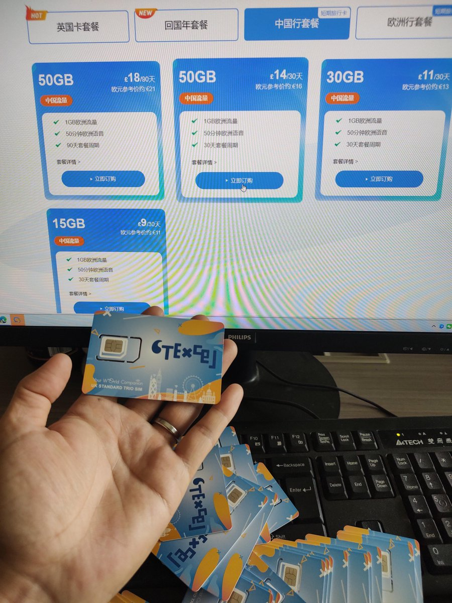
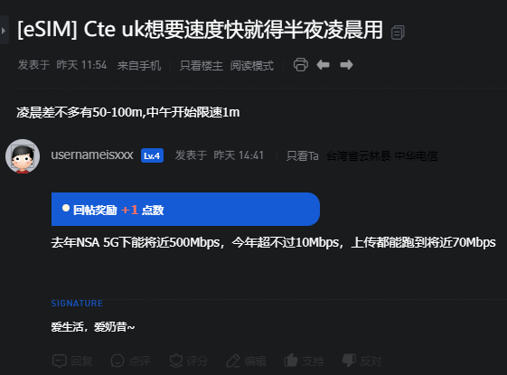
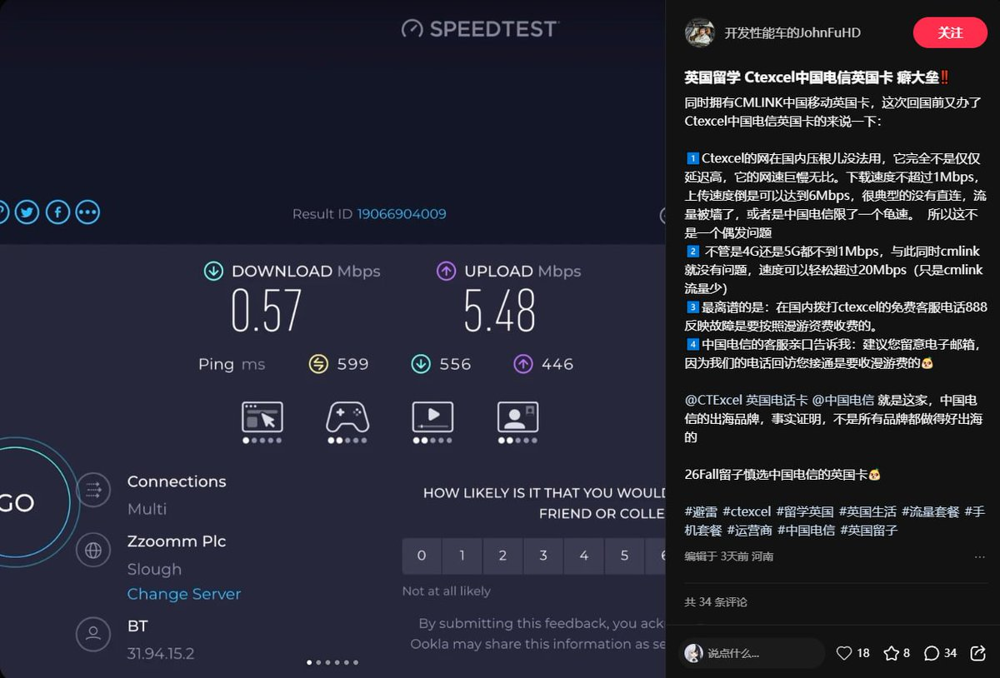

最近论坛上不少奶友反应CTExcel UK限速1Mbps的问题，记得去年年底那会还没那么严重，可能是用的人多了出现下载速度不如上传速度的情况，结果连xhs用户「开发性能车的JohnFuHD」也表示从英国回来后在当地（IP属地：河南）也没法用
电信英国在去年还推出过打折，原本无限量套餐是中英共用，后来调整中国流量为500GB，最后与19.9镑套餐一样都是300GB。相当于每月给200块就能在国内使用300GB的漫游流量，回国套餐此前还有半价，仅需24镑就能365天享受50GB流量
不过他们家跟小移在英国（CMLink UK）都是EE的MVNO，熟悉我推的老朋友都看到我介绍过，便宜、量大管饱，就是这阵子表现真的变糟糕了。不过CMLink UK实测还有个20Mbps下行，可能是人用得多了，现在倒没有以前刚开的时候快。不过两者的激活有点相似，都是通过英国IP代理拉起VoWiFi通话拨打电话激活，但移动英国可在香港地区手动选择CMHK注册，深圳湾公园就能蹭香港信号激活了，难度比较简单一些
至于说最近翻墙那么难，三大运营商的子公司又限得那么死，CMHK的牛经理在通信人家园论坛大骂上台用户是搅屎棍，本就是国内通信业的三大寡头还那么嚣张。至于说机房那些基层天天被通报忙的不可开交，上面的人真得干点人事，而不是整天搞中国特供eSIM写号政策，还弄了2个profile上限。理论上安卓是可以做双卡槽，然后eSIM限制写2个，做成四卡双待。然而就初代支持eSIM的iPhone11都能写8张profile起步，留那么多空间存啥？至于说有人喷我天天讲国际漫游好，我觉得倒是罪不至此，为啥？既然机场都炸了，自建又懒得搞，花钱又不愿意买嫌手机开热点给电脑麻烦，那还能咋搞。。。要不你出国定居吧，还能下入台证观光三，到台湾地区去体验下中华大地的自由吧
电信英国在去年还推出过打折，原本无限量套餐是中英共用，后来调整中国流量为500GB，最后与19.9镑套餐一样都是300GB。相当于每月给200块就能在国内使用300GB的漫游流量，回国套餐此前还有半价，仅需24镑就能365天享受50GB流量
不过他们家跟小移在英国（CMLink UK）都是EE的MVNO，熟悉我推的老朋友都看到我介绍过，便宜、量大管饱，就是这阵子表现真的变糟糕了。不过CMLink UK实测还有个20Mbps下行，可能是人用得多了，现在倒没有以前刚开的时候快。不过两者的激活有点相似，都是通过英国IP代理拉起VoWiFi通话拨打电话激活，但移动英国可在香港地区手动选择CMHK注册，深圳湾公园就能蹭香港信号激活了，难度比较简单一些
至于说最近翻墙那么难，三大运营商的子公司又限得那么死，CMHK的牛经理在通信人家园论坛大骂上台用户是搅屎棍，本就是国内通信业的三大寡头还那么嚣张。至于说机房那些基层天天被通报忙的不可开交，上面的人真得干点人事，而不是整天搞中国特供eSIM写号政策，还弄了2个profile上限。理论上安卓是可以做双卡槽，然后eSIM限制写2个，做成四卡双待。然而就初代支持eSIM的iPhone11都能写8张profile起步，留那么多空间存啥？至于说有人喷我天天讲国际漫游好，我觉得倒是罪不至此，为啥？既然机场都炸了，自建又懒得搞，花钱又不愿意买嫌手机开热点给电脑麻烦，那还能咋搞。。。要不你出国定居吧，还能下入台证观光三，到台湾地区去体验下中华大地的自由吧


